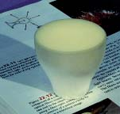
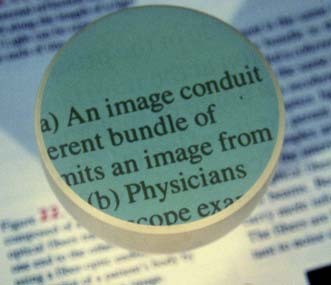

|
The field of fiber optics depends upon the total internal reflection of light rays traveling through tiny optical fibers. The fibers are so small that once the light is introduced into the fiber with an angle within the confines of the numerical aperture of the fiber, it will continue to reflect almost losslessly off the walls of the fiber and thus can travel long distances in the fiber. Bundles of such fibers can accomplish imaging of otherwise inaccessible areas.

|

Images courtesy of Edwin R. Jones, one of the authors of Contemporary College Physics. All rights reserved.
|